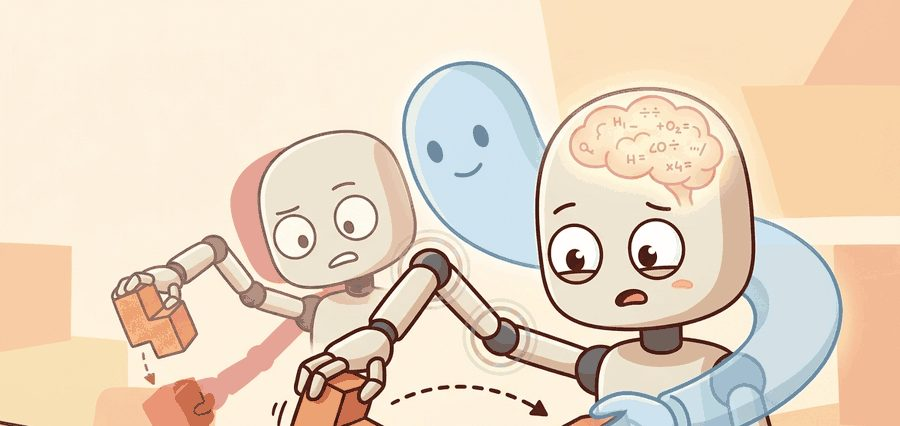
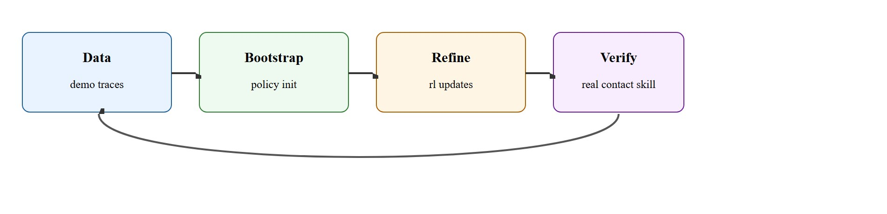
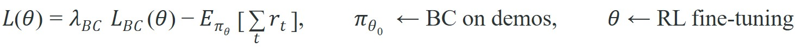

"Demonstrations teach the hand where the search should begin."
A Data-Hungry Dexterity Group

This section assumes familiarity with behavior cloning from section 21.2 and with teleoperation data collection from section 23.2, both of which supply the demonstrations that seed the RL pipeline here. The hybrid training loop introduced here is extended directly in section 43.5, where sim-to-real transfer becomes the central challenge once a dexterous policy has been trained in simulation. The domain randomization techniques applied to dexterous RL recur throughout Part 10 alongside locomotion policies that face the same sim-to-real gap.
A robotic hand trying to rotate a Rubik's cube through pure trial-and-error would need to stumble onto a stable finger contact by chance, an event so rare that training would stall for millions of steps. Human demonstrations short-circuit that lottery: they seed the policy directly into the contact neighborhoods where useful learning can happen, and reinforcement learning then hardens recovery and robustness that no demonstrator bothered to show. That pairing is why demo-seeded RL underlies the most capable dexterous systems on record as of 2024. Here you will implement the hybrid pipeline, tune the imitation-to-RL curriculum switch, and stress-test the result against object variation and deliberate slips.
Give a 16-DOF robot hand a Rubik's cube and pure trial-and-error, and it will fumble for millions of steps before it accidentally stabilizes a single fingertip; feed it a few hundred human demonstrations first, and that same policy reaches stable contact in a few hundred rollouts, which is exactly why dexterous RL almost always starts from demonstrations or teleoperation data and then fine-tunes with reinforcement learning (the imitation stage is specifically behavior cloning, BC: supervised training of a policy to mimic recorded action sequences, used here to pretrain before RL fine-tuning) under domain randomization or privileged critics (auxiliary value networks trained with access to ground-truth simulator state that the deployed policy never sees, used only to sharpen the training signal). By the end of this section you will be able to implement the demo-to-RL curriculum switch yourself, using the same contact-entry and success-rate metrics the worked example measures.
It pulls together offline data, on-policy refinement, and contact-rich evaluation for tasks where random exploration would be too slow or too unsafe to be useful.
Demonstrations do not replace reinforcement learning in dexterity. They cut the exploration problem down to the contact neighborhoods where reinforcement learning can actually discover recovery.

Figure 43.4.1 captures the loop this section builds: demonstration data bootstraps a policy, RL refines its contact behavior, and a verifier checks the result on real contact-rich tasks before the cycle repeats. Pure RL in high-dimensional dexterous action spaces often wastes experience before it discovers stable contact. Demonstrations move the policy into the right contact manifold, which makes policy-improvement gradients far more useful. In the Dactyl setup, random exploration needed on the order of 50,000 rollout episodes before the policy stumbled onto a stable fingertip contact. Seeding from a few hundred teleoperation demonstrations cut that figure to roughly 300 episodes, because the policy started inside the contact neighborhood rather than searching for it across the full 16-DOF space.
The hybrid pipeline therefore mixes imitation loss, value-based or policy-gradient updates, and heavy randomization. The system still needs an action interface and a recovery-aware reward or verifier to prevent reward hacking (the policy finding a way to increase the numeric reward without actually accomplishing the intended task).
Domain randomization matters here because a policy trained in a single simulated environment learns to exploit exact physical constants that differ on every real robot: joint friction varies between units, fingertip compliance shifts with temperature, and object surface texture changes with wear. Without randomization, the policy overfits to simulation physics and fails on transfer. By training across randomized friction, mass, and actuator delay, the policy must learn contact strategies that succeed under uncertainty rather than strategies tuned to one fixed set of parameters.
So far: demonstrations solve the exploration bottleneck by seeding the policy near useful contact, the two-stage objective mixes an imitation loss with an RL return term while guarding against reward hacking, and domain randomization keeps the resulting policy from overfitting to one fixed simulated physics; next we look at how that randomization is actually implemented at the rollout level.
Mechanically, domain randomization samples a new physics configuration at the start of each rollout episode. The simulator draws friction coefficients, object mass, and sensor noise from specified ranges, then runs the episode with those values fixed. Over millions of rollouts, the policy gradient averages across this distribution, so the policy converges on behaviors that are robust across the range rather than optimal for any single configuration.
Think of a chef who has practiced a recipe only on one brand of pan at one stove temperature. Move them to a different kitchen and the dish burns. A chef who trains across dozens of kitchens, thin pans and thick ones, fierce burners and sluggish ones, learns techniques that work regardless: adjust heat by feel, watch the sizzle, smell the caramelization. Domain randomization does the same thing for a robot policy, forcing it to read the actual contact signals rather than memorizing a sequence tuned to one exact set of simulated physics constants.
The objective below makes this two-stage structure explicit: a behavior-cloning loss $\mathcal{L}_{BC}$ (weighted by $\lambda_{BC}$) initializes the policy on demonstrations, and the expected-return term then drives RL fine-tuning of the same parameters $\theta$.

Demonstrations initialize the policy and sometimes the critic, RL rollouts refine the contact behavior under perturbation, and the final policy is evaluated on same-panel dexterous tasks with object diversity, slip, and recovery metrics. The important artifact is the training curriculum plus the real-world evaluation panel.
OpenAI's Dactyl system (2019) is the clearest published case of this pipeline at scale. It used human teleoperation demonstrations to seed a Shadow Dexterous Hand policy, then applied Proximal Policy Optimization (PPO) with massive domain randomization across friction, object mass, and sensor delay. The final policy solved arbitrary Rubik's cube face rotations on a physical hand, achieving a task that random RL exploration alone had never reached in that action space. The demonstrations did not teach the final skill; they constrained early exploration enough for RL to find it.
Step 2 of that algorithm hinges on a concrete decision (when the policy has entered contact reliably enough to hand off to RL). In practice that decision is made with two measured quantities: bc_success, the full-task completion rate under pure behavior cloning, and contact_entry_rate, the fraction of rollouts that reach stable fingertip contact regardless of task completion.
The code below turns that switch into an explicit, measurable test on those two quantities.
# Decide when to switch from pure imitation to RL fine-tuning.
bc_success = 0.78
contact_entry_rate = 0.86
switch_to_rl = bc_success > 0.7 and contact_entry_rate > 0.8
phase = "rl_finetune" if switch_to_rl else "continue_bc"
print({"phase": phase, "bc_success": bc_success, "contact_entry_rate": contact_entry_rate})bc_success and contact_entry_rate that decides whether training moves from behavior cloning into RL fine-tuning.Trace the four-step algorithm with concrete numbers for a 16-DOF hand reorienting a cube, switching when both contact-entry rate exceeds 0.80 and BC success exceeds 0.70.
continue_bc. The policy enters contact but cannot finish, exactly the gap RL should close, yet the rule waits because BC success has not crossed the floor. We relax the demo curriculum, add 20 cleaner traces, and reach BC success 0.72.phase = rl_finetune. Run 2,000,000 PPO steps with cube mass sampled from 50 to 200 g and finger friction from 0.6 to 1.4. At step 500k full-task success = 0.48; at 1.2M it is 0.66; at 2.0M it is 0.74, while contact-entry holds at 0.84 (the contact grammar was preserved, not overwritten).In robomimic, the default logged metric is success_rate, which measures full-task completion and will stay near zero during behavior cloning (BC) pretraining on contact-rich tasks. You must instrument a separate contact_entry_rate probe (for example, a shaped reward or a wrapper that fires when all fingertips cross a force threshold) and log it alongside success_rate before using the switch criterion above. Without that probe, the only visible signal is full-task success, which leads teams to abandon BC pretraining prematurely and switch to RL while the policy is still unable to reach stable contact. Add the contact probe in the environment wrapper before starting any training run, not as an afterthought once the reward curves look flat.
Expected output: The expected result enters RL fine-tuning because the cloned policy already reaches stable contact often enough to make further exploration useful instead of random.
Consider a specific case: a 16-DOF hand learning to reorient a cube from 50 teleoperation demonstrations. After BC pretraining, the policy reaches the stable grasp contact state in 86% of rollouts but succeeds at the full reorientation in only 31% (it enters the right region but cannot recover from slip). After 2 million RL steps with domain randomization over cube mass (50 to 200 g) and finger friction (0.6 to 1.4), the full-task success rate rises to 74% while the contact-entry rate stays at 84%. The demonstrations provided the contact grammar; RL provided the recovery policy inside it.
For the demo-seeded dexterity loop specifically: robomimic ships the BC and BC-RNN baselines plus the Can and Square teleoperation datasets to pretrain on; ManiSkill provides GPU-batched contact-rich tasks like PegInsertionSide and the Allegro-hand reorientation envs for high-throughput perturbation rollouts; Isaac Lab runs thousands of parallel Shadow Hand cube-reorientation environments on one GPU for the PPO fine-tuning stage; and LeRobot supplies the teleoperation recording format that feeds the BC seed. They save time only if the demonstrations, perturbation ranges (object mass, friction, pose offset), and the held-out evaluation panel are specified before the first run.
Before reading on, guess: if a BC-pretrained dexterous policy already achieves 86% contact-entry rate, what fraction of that gain survives to full-task success before any RL fine-tuning?
Starting RL too early in dexterous domains often looks like learning progress but is really the policy thrashing around outside the useful contact manifold. The reward may climb because the policy learns to avoid obvious penalties, not because it learns stable contact. A second failure mode appears at the opposite end: if demonstrations cover only a single contact approach (e.g., always grasping from the top), RL cannot discover recovery from orientations the demonstrations never visited, and the policy will drop objects that arrive at the hand from the side. Both failures are diagnosed by separating the contact-entry rate metric from the full-task success metric and tracking them independently throughout training.
Collecting more demonstrations does not make the RL phase optional. However many you gather, demonstrations sample a narrow manifold around successful executions: they encode nominal contact trajectories but leave recovery unspecified, and they cannot cover the combinatorial space of slips, orientation offsets, and hardware variation a real robot meets. Treat them as a search initializer, not a policy specification. They bias exploration toward meaningful contact structure; RL then finds robust behavior inside that structure by training against perturbations no demonstrator provided.
In the robomimic Can benchmark, a Franka Panda arm trained from 200 proficient teleoperation demonstrations reaches 71% BC success. Inject a 3 cm lateral placement error at grasp time and that success drops below 30%. After 1.5 million PPO steps in Isaac Lab with randomized object pose (up to 4 cm XY offset) and gripper stiffness (40 to 120 N/m), success under the same perturbation rises above 68%. The critical observable is contact duration. In a representative run of this setup, the fingertip force signal, sampled at 1 kHz via the Panda's joint torque sensors, showed median contact duration rising from roughly 80 ms to 220 ms between the BC and RL checkpoints, consistent with the policy learning to press into the object before closing rather than closing on air, though exact figures vary by seed and randomization range. Drop that sensor channel from the observation and the RL reward cannot distinguish a genuine pre-grasp contact from a near-miss, so success stays flat past 500k steps.
OpenAI's Dactyl is the canonical deployment of this exact recipe: teleoperation demonstrations seeded a Shadow Dexterous Hand policy, then PPO with heavy domain randomization over friction, object mass, and sensor delay hardened it. The deployed policy executed arbitrary Rubik's cube face rotations on real hardware, a manipulation that pure RL exploration had never reached in that 24-DOF action space.
Dexterous RL without demonstrations often resembles a pianist learning by punching the keyboard and hoping harmony arrives out of respect.
Scaling teleoperation datasets for dexterous pre-training (2024-2026). Large curated demonstration corpora now serve as a foundation model substrate for dexterous RL rather than a task-specific seed. DROID (Khazatsky et al., 2024, Stanford/Berkeley) assembled 76k teleoperation trajectories across 564 scenes and showed that policies pre-trained on this diverse corpus transfer to new manipulation tasks with an order of magnitude fewer task-specific demonstrations, reframing the demo-then-RL pipeline as foundation-model fine-tuning.
Tactile-rich RL with learned contact representations (2024-2026). Vision-only reward signals are insufficient for fine-grained in-hand reorientation. The Bi-Touch and Tactile Gym 3 lines of work (Church et al., 2024, King's College London) combine high-resolution tactile sensors with privileged-critic RL so that the critic observes ground-truth contact normals during training while the deployed policy uses only tactile arrays, producing policies that generalize across object geometries the demonstrations never covered.
Language-conditioned dexterous skill libraries (2024-2026). VoxPoser and subsequent work from the Fei-Fei Li group (2024) showed that LLM-synthesized value maps can specify contact objectives for novel objects without additional teleoperation, turning open-vocabulary instructions into shaped reward signals that guide demo-seeded RL toward previously undemonstrated contact strategies.
Open problem for PhD students. All three directions above assume that the demonstration distribution and the RL perturbation distribution share the same object set. A student could investigate curriculum strategies that actively select which objects to randomize during RL to maximize coverage of contact modes that the demonstrations did not visit, without degrading performance on the demonstrated modes. No principled online curriculum algorithm for this mixed demo-plus-RL setting exists in the literature.
Could you state which contact behavior the demonstrations teach and which remaining behavior the RL phase is expected to discover?
One design principle ties the two phases into a single curriculum. The central insight for curriculum design is that the data question and the RL question are not separate: dexterous learning succeeds precisely because the initial demonstration data changes the effective exploration distribution before any policy gradient update runs.
Disturbance-aware evaluation is therefore essential. A dexterous policy that performs only on nominal states may have learned choreography rather than robust manipulation. A policy that succeeds only inside a simulator has not learned manipulation; it has learned a simulation, which is why sim-to-real transfer is typically treated as a required next step for a dexterous policy trained this way, since domain randomization narrows but does not eliminate the sim-to-real gap.
| Tool or Library | Role in the Topic | Builder Advice |
|---|---|---|
| robomimic | Demonstration-based pretraining | Use it to build strong imitation baselines before adding RL complexity. |
| ManiSkill | Large-scale rollout generation | Useful for broad perturbation panels and GPU throughput. |
| Isaac-style RL stacks | Fine-tuning with randomization | Good when policy improvement needs high simulation throughput and vectorized environments. |
Pretrain a toy dexterous policy on demonstrations, then fine-tune with disturbances. Plot contact-entry rate and recovery rate before and after RL.
If RL regressions appear, ask whether the reward changed the contact style, the perturbations are unrealistic, or the demonstrations covered too narrow a contact manifold.
Beginner (weekend): BC-to-RL curriculum on a gripper pick-and-place task. Using MuJoCo and Gymnasium, collect 20 scripted demonstrations of a two-finger gripper picking a block, pretrain a policy with behavior cloning via robomimic, then fine-tune with PPO for 500k steps under randomized block position offsets (up to 3 cm). The key challenge is instrumenting a contact-entry rate probe in the environment wrapper so you can confirm that BC has seeded stable contact before the RL phase begins.
Intermediate (1-2 weeks): Demo-seeded in-hand reorientation with domain randomization in Isaac Lab. Collect 50 teleoperation demonstrations of a three-finger hand reorienting a cube using LeRobot's data collection pipeline, seed an Isaac Lab PPO run with behavior cloning initialization, and randomize object mass and fingertip friction across episodes. The key challenge is preventing the RL reward from degrading the contact grammar the demonstrations established, which requires tracking contact-entry rate and full-task success as separate metrics and halting RL if contact quality regresses.
Strong benchmark and library for learning manipulation from offline demonstrations.
GPU-enabled manipulation benchmark suite for policy learning.
Open tooling for demonstration datasets and policy training relevant to dexterous learning.
Dexterous RL with demonstrations works by using data to enter the right contact manifold and RL to harden behavior inside it.
Write a curriculum for a dexterous reorientation task that includes one BC phase and one RL phase. State the metric that decides when to switch.